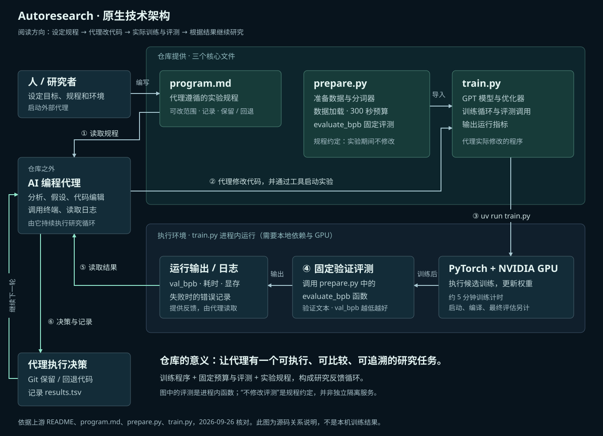

有真实的实验对象
提供 GPT 模型、优化器与训练循环，代理的改动可以立即进入训练验证。
UNDERSTANDING / 我们目前达成的理解
讨论汇总 · 2026.09.26 · 扩展方向待验证我们现在的理解：它的工作方式，本质上是由实验反馈驱动的迭代循环。外部 AI 代理负责持续执行，仓库提供小语言模型训练程序、固定评测和实验规程。
本页汇总已核对的事实与我们的研究判断。当前网页运行的是手工规则实验；模型训练、AI 自动改进与产品收益均尚未验证。
完整总览 / 从原库到软件、仿真与硬件
从上往下看：原库能力与实验循环 → 三个核心文件 → 软件、仿真、硬件三条扩展方向 → 产品化与验证条件 → 当前进展。原库事实与待验证构想在图中分别标注。

原库依据：README · program.md · prepare.py · train.py。仿真接口参考：Gazebo · PX4 的软件仿真与硬件在环说明。源码事实核对日期：2026-09-26；场景适用性为本项目研究判断。
继续展开：原库内部架构 · 12 种场景的分析与验收方式 · 仿真与感知说明 · 已有实验记录
技术架构 / 这个库的意义是什么
可以把它理解为围绕实验反馈持续执行的 AI 研究循环。源库把一个具体训练任务整理为代理可操作的实验环境，循环执行依赖外部编程代理。
核心逻辑：实际执行 → 结果评估 → 反馈给代理 → 下一次改动。外层大模型分析与内层程序运行分别承担不同职责。阅读最新的共同理解 ↑

提供 GPT 模型、优化器与训练循环，代理的改动可以立即进入训练验证。
固定预算、数据与验证指标，让不同改法在一致条件下比较，减少凭描述判断好坏。
代理按规则记录实验、关联代码版本、保留改善并撤销退步，再提出下一次尝试。
调度能力实际来自哪里？外部代理负责思考、工具调用和持续执行；仓库通过 program.md规定流程，通过 train.py 与 prepare.py提供实验。它没有独立的通用任务队列、模型 API 调度服务或网页控制台。
train.py 导入 prepare.py 的数据工具与评测函数，训练后在同一进程里调用 evaluate_bpb。指令要求代理不修改评测；这一约定并不是独立进程隔离或权限强制机制。
代理按 program.md 操作 Git、写入 results.tsv，记录代码版本、指标和保留／撤销状态。本次核对的默认 train.py 打印指标，没有自动保存模型检查点的步骤；若要交付训练后的权重，需要另行增加保存和复验流程。
跨领域迁移时，需要重新提供可运行任务与评测；独立最终测试、预算治理及网页管理等也要另行建设。当前说明页是本研究项目的展示层。
依据 上游 README、program.md、prepare.py 与 train.py，2026-09-26 核对。架构图由本项目绘制。
使用场景 / 把后半段讨论具体展开
8 个纯软件场景、3 个仿真与 3D 场景，以及原库的小模型训练任务。每项都列出问题、分析材料、可修改内容和验收方式；扩展方向尚未接入或实测。
当前展示全部 12 个场景。扩展构想需要另外适配和验证。
页面加载慢、列表滚动卡顿，想在功能和画面保持完整的情况下提速。
代码优化 · 通常无需训练模型
报表生成慢、查询资源占用高，希望保持结果一致并减少等待。
查询与索引 · 无需训练模型
大量文件解析、图像处理或批量计算耗时太长。
算法与实现 · 无需训练模型
文件太大，希望在约定质量下减小体积，或加快处理。
配置与流程 · 通常无需训练模型
不同格式的订单、表格、扫描件中，商品、金额或日期经常提取错误。
AI 流程 · 可先使用现有模型
知识库里明明有资料，回答仍找错出处、遗漏信息或调用成本过高。
检索与回答 · 不必重新训练大模型
用户输入商品或内容需求后，相关结果排得太后，或推荐缺乏相关性。
排序策略 · 可包含模型训练
员工排班、订单分配或计算任务排队，存在冲突、等待或资源闲置。
约束与算法 · 通常无需训练模型
角色需要在解谜、协作或经营任务中学习行动与资源分配。
策略优化 · 可训练小型策略模型
场景帧率低、光照或阴影开销大，希望在约定画质下提高效率。
渲染代码与配置 · 不一定训练模型
机器人在障碍或多车通行场景中，出现碰撞、互相等待或任务超时。
仿真策略 · 可包含强化学习
固定设备和训练预算，寻找预测验证文本更准确的训练方案。
原库任务 · 真实更新模型权重
程序加速可以交付通过正确性测试的代码改动、性能对比与回退版本；文档抽取可以交付处理流程、独立样本的逐字段结果与成本报告。其他场景也应交付实际方案和可复查证据。
选择任务时，先确认手上已有的代码、数据与客户问题。若只需要试几个参数，普通搜索可能更合适。继续看适用条件与判断依据 ↓
模型结构、优化器、批量大小与训练实现，集中在 train.py。外部代理执行修改与实验。
固定训练计时；启动、编译和最终评估另计。跨设备的分数不宜直接排名。
检查模型对验证文本的概率预测质量，越低越好。单次改善仍需复跑和独立验证。
先运行原始基线，再进入前述改动、执行、评估与反馈循环。每次尝试都应关联实际代码和运行记录。
直接使用与迁移方法需要区分。原仓库直接支持小语言模型训练实验。通用软件优化、机器人训练、物理仿真和硬件接入，需要另行建设适配；原库没有现成的通用调度平台或三维引擎。
02 / 分清三个角色
读代码、日志与失败案例，提出原因假设，修改程序。每轮研究通常无需重新训练这个大模型。
可以是更新权重的小模型，也可以是路径规划、文档处理等普通算法。优化代码的任务可能完全不涉及模型训练。
实际运行，在固定条件下评分。代理的解释和自评分不足以证明有效；评估规则与最终测试应独立管理。
“小”主要描述参数量与计算规模；“专用”描述用途。小模型可以通用，大模型也可以专用。是否适合某个任务，需要检查数据、能力、延迟和成本，不能仅凭大小判断。
日志可以支持一种解释，也可能同时存在其他原因。模型提出改法后，仍需对照实验、重复运行和未参与选优的测试，排查随机波动、错误评分与过拟合。没有获得改善，也是一种有效研究结果。
03 / 修正过宽的场景推荐
前面的讨论曾把“可以扩展”说成“适合做产品”。这里收紧判断：以下为适配分析，尚无跨场景实测或商业验证。
研究空间：算法、数据结构、检索或文档处理流程。
前提：正确性测试、真实性能数据或有可靠答案的案例；需要和普通搜索及成熟方案比较。
原库没有现成适配器。
研究空间：导航、避障、协作与训练方法。
前提：可信的物理和观测模型、可运行策略、任务完成评价、未参与选优的场景。
动作可以由传统算法或小型策略模型决定；仿真收益需要后续现实验证。
如果只有少量参数组合，直接枚举或使用参数搜索可能更经济。现有光照演示属于这一类，适合说明评测方法，尚不足以证明 AI 研究价值。
可与 Optuna 等搜索工具比较，再决定是否引入大模型。
“画面更漂亮”需要参考图、感知评价或人工判断。明确为“保持质量下提高帧率”，才更容易组织可比较的实验。
角色行为学习研究的是任务完成能力，与渲染画质是两个不同目标。
可尝试查询实现、资源分配、排程等变化，但要先保留正确结果和真实业务约束。
已有优化器、领域算法和人工方案都应作为基线。引入大模型后的收益尚待验证。
最小验证问题：AI 提出的改动，能否在同样总预算、未参与选优的测试中超过基线？自动化节省人工的价值也可以单独测量。当前没有证据证明以上每个方向都能获得收益。
具体任务已在前面的使用场景目录默认展开，可按纯软件、仿真与 3D、原库任务筛选。
04 / 三维、感知、算法如何关联
以导航与协作避障为例。下图为拟议结构；当前网页只实现了部分观察和评测能力。
运动、碰撞、遮挡
图像、测距、延迟
从观测推断环境
选择导航动作
再观测、再评价
模拟器需要真实状态来计算物理和生成观测；独立评估器可以用它计分。若研究感知，算法应接收模拟传感器输入。
直接给算法真实坐标可以建立理想条件基线，但必须明确标注；这不能验证感知能力或现实可用性。
读取实验记录，提出策略或训练程序的改动，再启动下一轮仿真。网页负责配置、结果比较与回放。
需要学习行为时，可另接强化学习或模仿学习框架；大模型无需参与每一步实时控制。
“3D 画面”“物理仿真”“传感器感知”“策略训练”需要分别实现和验证。动画中的光线与标记，仅表达过程；当前演示没有真实设备发射、命中或捕获模型。
05 / 可扩展的产品构想
下面是候选方向，尚未选定最终产品，也未验证客户付费需求。优先级应由真实用户、数据与实验条件决定。
用户：机器人研发团队。交付：失败场景、版本对照与经测试的候选策略。最贴近此前的空间交互兴趣；先建立可信环境与现有算法基线。
用户：有真实订单和资源数据的业务团队。交付：满足约束的调度方案及仿真比较。关键是业务建模与数据校准。
用户：已有文档处理或知识库产品的团队。交付：错误案例集、流程版本与独立评测。需要可靠答案，可参考 DSPy。
用户：具备领域知识与求解器的工程团队。交付：散热、能耗等目标下的候选设计与分析。可参考 OpenMDAO；物理模型和工程验证需专业合作。
用户：模型研发团队。交付：固定预算下的训练代码、权重与独立评测。与源项目直接对应，当前仅有本地任务设计。
可以复用：实验配置、执行、预算、版本、记录、比较与回放。每个领域要重建：任务、约束、运行环境和评价标准。已有 参数搜索与 实验记录工具；产品需要证明具体的时间节省或结果改善。
06 / 本项目实际进展
直接读取场景坐标，按预设观察规则显示光线与标记。可以手动飞行和比较预设规则。
尚无基于图像的识别、策略训练或真实物理命中。
回到 V1 演示 ↗两种手工规则读取渲染图像的统计量，自动运行十二轮、统计误报漏报并回放。
尚无物体识别、定位、策略学习或 AI 自动修改。
打开实验台 ↗已保存任务设计与硬件环境检查记录；尚未安装训练依赖、执行训练或获得改进结果。
这是保留的可选验证任务，不代表最终产品方向。
查看设计与条件 ↗后续值得交付的证据：基线、明确改动、真实运行记录、同预算比较、独立复验。预设动画、随机曲线与单次分数，均不能证明 AI 学会了能力。现有实验的数字只对应其合成条件，详见 实测记录。
来源与继续阅读
2026-09-26 核对。页面文字与流程示意由本研究项目整理；没有使用外部图片。适用性与产品排序属于本项目判断。